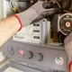

Get in Touch with Us
We're here to help with your slab leak detection needs. Call (270) 294-6900 right now for an immediate over-the-phone consultation and same-day scheduling.
Call (270) 294-6900 for Immediate Service
Our local slab leak experts are available 24/7 to answer your call and schedule same-day diagnostics.
- 100% Free Second Opinions on Slab Leaks
- Speak Directly to a KY Master Plumber
- Same-Day Diagnostic Appts Available
Owensboro Leak Detection Experts
-
Address
4010 Airpark Dr, Owensboro, KY 42301
-
Phone
(270) 294-6900 -
Hours
Mon–Fri: 7AM – 7PM
Sat: 8AM – 4PM
Sun: Emergency Only
24/7 Emergency Available
Get Immediate Slab Leak Detection in Owensboro
Don't wait for water damage to escalate. Contact us for prompt slab leak detection services and protect your home today.
What Owensboro Homeowners Say About Our Service
Read real feedback from Daviess County residents who trusted our licensed plumbers for fast, non-invasive slab leak location and pipe repair.
"We heard water running under our living room floor on a Friday night. Owensboro Leak Detection Experts arrived in under 45 minutes! Acoustic ground sensors pinpointed the leak without destroying our hardwood floors. Saved us thousands!"
"Our water bill spiked out of nowhere. Master Plumber Mike found a hot water line leak under our kitchen slab fast using thermal imaging cameras. Honest, clean, and upfront pricing. Highly recommended!"
"Outstanding emergency repair service. They rerouted our sub-slab copper lines through the attic with flexible PEX pipe in one day. No jackhammering or concrete dust inside our home. Best plumbers in Daviess County!"

Before & After: Non-Invasive Slab Leak Pinpointing & Repair
See how our licensed Kentucky master plumbers locate hidden sub-slab water leaks and complete overhead PEX reroutes without jackhammering your home's flooring.